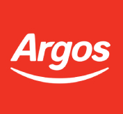

Employment History
Find a copy of My CV linked below !
Click here to download CV
Employer: Ekco / Cloudhelix
Date: October 2021 – December 2021 Role: Placement Cloud Engineer
Job Description: Working on a part-time placement within Ekco I gained work experience by attending daily company meetings where i was allocated tasks, this allowed me to gain experience within the following systems
- Interaction with multiple ticketing systems - harmony / Freshdesk / Slack
- Virtualization through vSphere / vCenter / vCloud
- Remote management through vmWare horizon / mRemoteNG
- Nagios system monitoring configuration and Veeam backup management
- Communicating with Using Teams / Outlook
Employer: B&M
Date: March 2021 – Current Role: Till / Floor Staff
Job Description: Fast-paced sales environment, duties include unpacking deliveries, placing products on shelves, following floor plans for product placements and stock replenishment. Operation of the till, cash handling, tannoy systems, and general housekeeping.
Employer: Currys / Pc World
Date: November 2019 – March 2020 Role: Salesperson
Job Description: Fast-paced, target-based sales position helping customers have the best experience in the store to find the right products for them. Working across all areas of the store as needed to support my colleagues to deliver on store KPI’s, record sales, and live demonstrations performed as well as provide continuous feedback to alert management of key issues in store.
Employer: Teleperformance (Clydesdale & Yorkshire bank)
Date: May 2016 - November 2019 Role: Customer Assistant
Job Description: Tasked with answering inbound calls, projecting a professional company image through phone interaction with new and existing clients. Main duties include answering customer inquiries, resolving their problems, up-selling & making appointments as well as processing orders, faxes, keeping customers details up to date, and recording any account notes
Customer Support Assistant: Complex & Niche
Date: March 2018-November 2019
Working closely with colleagues in a busy team to answer complicated and unusual banking queries with a focus on Internet and Mobile banking. Involves quickly understanding new lines of business and adapting to deal with varied types of inquiries. Requires communicating with other departments and corroborating different sources of information, with daily use of office suites and ICT knowledge.
Employer: Argos
Date: Oct 2010 – May 2016 Role: Warehouse / Team leader
Job Description: Responsible for the safety and security of staff and business during deliveries along with being responsible for ensuring my team was ready for waste uplift by the delivery crew, frequently working with customers, with experience including order fulfilment, till operation, customer service as well as product demonstration. I was also responsible for stock replenishment, rotation, including quality control standards too.
Employer: Argos
Team Leader – November 2012 – January 2013
Managing the Delivery team to ensure a fluid operation of our stockroom. Time management, quality control along with efficiency along with associated paperwork. I reverted to my previous role as a warehouse assistant as the position was temporary.
Employer: Ardrossan Filling Station (Esso)
Date: July 2008 – February 2010 Role: Till attendant
Job Description: Responsible for garage safety and security along with working with customers, till operation, restocking and cleaning, money handling, and securing the premises and machinery for the night. Trusted key holder.